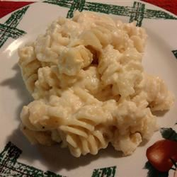

Macaroni and Cheese

All Day Macaroni and Cheese
It takes all day to cook, but just a few minutes to prepare!
A rich macaroni and cheese dish made with evaporated milk to make it even creamier!
Ingredients
- 8 ounces elbow macaroni
- 4 cups shredded sharp Cheddar cheese
- 1½ cups milk
- 2 eggs
- 1 teaspoon salt
- ½ teaspoon ground black pepper
Steps
- In a large pot, cook the macaroni in boiling water 10 minutes,
or until al dente, and drain.
- In a large bowl, mix the cooked macaroni, 3 cups of the sharp Cheddar cheese, evaporated milk, milk, eggs, salt, and pepper.
Transfer to a slow cooker that has been coated with non-stick cooking spray.
Sprinkle with the remaining 1 cup of shredded sharp Cheddar cheese.
- Cover, and cook on Low for 5 to 6 hours, or until the mixture is firm and golden around the edges.
Do not remove the cover or stir the mixture until the mixture has finished cooking. Serve warm.
Link
Homepage